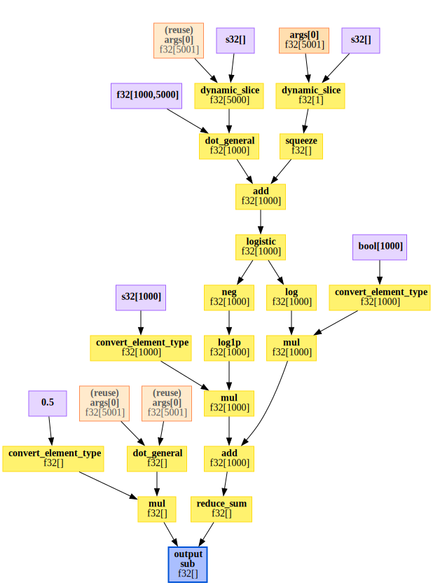
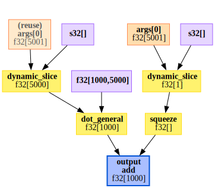
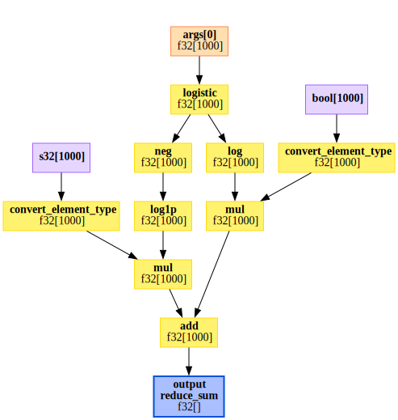
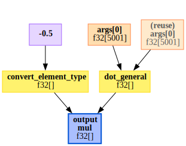
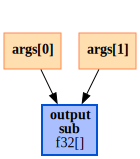
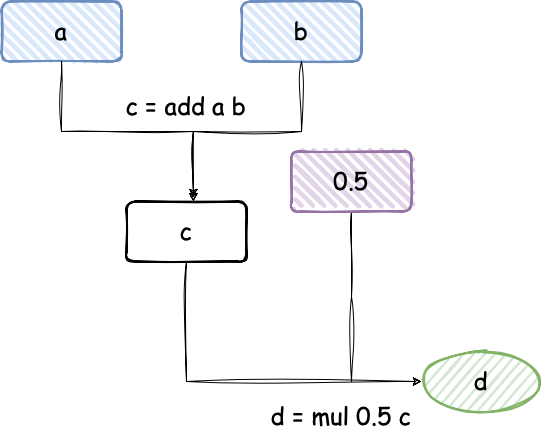

import jax.numpy as jnp
from jax.scipy.optimize import minimize
from jax.scipy.special import expit
from jax import jacfwd, grad
from jax import Array
from typing import Callable, Tuple, List, Set, Dict
def laplace(f: Callable, x0: Array) -> Array:
nx = x0.shape[0]
mode, *details = minimize(lambda x: -f(x), x0, method = "BFGS")
H = -1.0 * jacfwd(grad(f))(mode)
return mode, HI am, once again, in a bit of a mood. And the only thing that will fix my mood is a good martini and a Laplace approximation. And I’m all out of martinis.
To be honest I started writing this post in February 2023, but then got distracted by visas and jobs and all that jazz. But I felt the desire to finish it, so here we are. I wonder how much I will want to re-write1
The post started as a pedagogical introduction to Laplace approximations (for reasons I don’t fully remember), but it rapidly went off the rails. So strap yourself in2 for a tour through the basics of sparse autodiff and a tour through manipulating the jaxpr intermediate representation in order to make one very simple logistic regression produce autodiff code that is almost as fast as a manually programmed gradient.
The Laplace approximation
One of the simplest approximations to a distribution is the Laplace approximation. It be defined as the Gaussian distribution that matches the location and the curvature at the mode of the target distribution. It lives its best life when the density is of the form \[ p(x) \propto \exp(-nf_n(x)), \] where \(f_n\) is a sequence of functions3. Let’s imagine that we want to approximate the normalized density \(p(x)\) near the mode \(x^*\). We can do this by taking the second order Taylor expansion of \(f_n\) around \(x=x_0\), which is \[ f_n = f_n(x^*) + (x-x^*)^TH(x^*)(x-x^*) + \mathcal{O}((x-x^*)^3), \] where4 \[ [H(x^*)]_{ij} = \frac{\partial^2 f_n}{\partial x_i \partial x_j} \] is the Hessian matrix.
If we replace \(f_n\) by its quadratic approximation we get \[ p(x) \approx C\exp(-n(x- x^*)^TH(x^*)(x-x^*)), \] where \(C\) is a constant.
After normalizing the approximation to make sure that we get a proper density, we get the Laplace approximation \[ p(x) \approx N(x^*, n^{-1}H(x^*)^{-1}). \]
The Laplace approximation can be justified rigorously and has a well-studied error and it’s known to work quite well when \(p(x)\) is a) unimodal5 and b) isn’t tooooo non-Gaussian.
In practice, people have found that Laplace approximations do a reasonable6 job quantifying uncertainty even in complex neural network models and it is at the heart of any number of classical estimators in statistics.
From an implementation perspective, the Laplace approximation is pretty simple. It’s just a two step process:
Find the mode \(x^* = \arg \max_x f_n(x)\) using your favorite optimizer
Compute the Hessian \(H(x^*)\).
In a Bayesian context, we typically take \[ f_n(x) = \frac{1}{n} \sum_{i=1}^n \log p(y_i \mid x) + \frac{1}{n} \log p(x), \] which will lead to a Gaussian approximation to the posterior distribution. But this post really isn’t about Bayes. It’s about Laplace approximations.
Computing the Laplace approximation in JAX
This is a two step process and, to be honest, all of the steps are pretty standard. So (hopefully) this will not be too tricky to implement. For simplicity, I’m not going to bother with the dividing and multiplying by \(n\), although for very large data it could be quite
There are a few things worth noting here. There’s not really much in this code, except to note that jax.scipy.optimize.minimize finds the minimum of \(f\), so I had to pass through the negative of the function. This change also propagates to the computation of the Hessian, which is computed as the Jacobian of the gradient of f.
Depending on what needs to be done with the Laplace approximation, it might be more appropriate to output the log-density rather than just the mode and the Hessian, but for the moment we will keep this signature.
Let’s try it out. First of all, I’m going to generate some random data from a logistic regression model. This is going to use Jax’s slightly odd random number system where you need to manually update the state of the pseudo-random number generator. This is beautifully repeatable7 unlike, say, R or standard numpy, where you’ve got to pay a lot of attention to the state of the random number generator to avoid oddities.
from jax import random as jrandom
def make_data(key, n: int, p: int) -> Tuple[Array, Array]:
key, sub = jrandom.split(key)
X = jrandom.normal(sub, shape = (n,p)) /jnp.sqrt(p)
key, sub = jrandom.split(key)
beta = 0.5 * jrandom.normal(sub, shape = (p,))
key, sub = jrandom.split(key)
beta0 = jrandom.normal(sub)
key, sub = jrandom.split(key)
y = jrandom.bernoulli(sub, expit(beta0 + X @ beta))
return (y, X)An interesting side-note here is that I’ve generated the design matrix \(X\) to have standard Gaussian columns. This is not a benign choice as \(n\) gets big. With very high probability, the columns of \(X\) will be almost8 orthonormal, which means that this is the best possible case for logistic regression. Generally speaking, design matrices from real9 data have a great deal of co-linearity in them and so algorithms that perform well on random design matrices may perform less well on real data.
Ok, so let’s fit the model! I’m just going to use \(N(0,1)\) priors on all of the \(\beta\)s.
from functools import partial
n = 100
p = 5
key = jrandom.PRNGKey(30127)
y, X = make_data(key, n, p)
def log_posterior(beta: Array, X: Array, y: Array) -> Array:
assert beta.shape[0] == X.shape[1] + 1
prob = expit(beta[0] + X @ beta[1:])
return (
jnp.sum(y * jnp.log(prob) +
(1-y) * jnp.log1p(-prob)) -
0.5 * jnp.dot(beta, beta)
)
post_mean, H = laplace(
partial(log_posterior, X = X, y = y),
x0 =jnp.zeros(X.shape[1] + 1)
)
post_cov = jnp.linalg.inv(H)Let’s see how this performs relative to MCMC. To do that, I’m going to build and equivalent PyMC model.
import numpy as np
import pymc as pm
import pandas as pd
with pm.Model() as logistic_reg:
beta = pm.Normal('beta', 0, 1, shape = (p+1,))
linpred = beta[0] + pm.math.dot(np.array(X), beta[1:])
pm.Bernoulli(
"y",
p = pm.math.invlogit(linpred),
observed = np.array(y)
)
posterior = pm.sample(
tune=1000,
draws=1000,
chains=4,
cores = 1)
# I would like to apologize for the following pandas code.
tmp = pm.summary(posterior)
tmp = tmp.assign(
laplace_mean = post_mean,
laplace_sd = np.sqrt(np.diag(post_cov)),
Variable = tmp.index
)[["Variable", "mean", "laplace_mean", "sd", "laplace_sd"]]
with pd.option_context('display.precision', 3):
print(tmp)Auto-assigning NUTS sampler...
Initializing NUTS using jitter+adapt_diag...
Sequential sampling (4 chains in 1 job)
NUTS: [beta]
Sampling 4 chains for 1_000 tune and 1_000 draw iterations (4_000 + 4_000 draws total) took 5 seconds.
100.00% [2000/2000 00:01<00:00 Sampling chain 0, 0 divergences]
100.00% [2000/2000 00:01<00:00 Sampling chain 1, 0 divergences]
100.00% [2000/2000 00:01<00:00 Sampling chain 2, 0 divergences]
100.00% [2000/2000 00:01<00:00 Sampling chain 3, 0 divergences]
Variable mean laplace_mean sd laplace_sd
beta[0] beta[0] 0.249 0.234 0.235 0.229
beta[1] beta[1] -0.964 -0.914 0.435 0.428
beta[2] beta[2] -1.710 -1.616 0.490 0.470
beta[3] beta[3] -0.975 -0.926 0.423 0.416
beta[4] beta[4] -0.739 -0.716 0.470 0.457
beta[5] beta[5] 0.637 0.609 0.481 0.475Well that’s just dandy! Everything is pretty10 close. With 1000 observations it’s identical to within 3 decimal places.
Speeding up the computation
So that is all well and dandy. Let’s see how long it takes. I am interested in big models, so for this demonstration, I’m going to take \(p = 5000\). That said, I’m not enormously interested in seeing how this scales in \(n\) (linearly), so I’m going to keep that at the fairly unrealistic value of \(n=1000\).
import timeit
def hess_test(key, n, p):
y, X = make_data(key, n , p)
inpu = jnp.ones(p+1)
def hess():
f = partial(log_posterior, X = X, y = y)
return -1.0 * jacfwd(grad(f))(inpu)
return hess
n = 1000
p = 5000
key, sub = jrandom.split(key)
hess = hess_test(sub, n , p)
times = timeit.repeat(hess, number = 5, repeat = 5)
print(f"Autodiff: The average time with p = {p} is {np.mean(times): .3f}(+/-{np.std(times): .3f})")Autodiff: The average time with p = 5000 is 3.222(+/- 0.379)That doesn’t seem too bad, but the thing is that I know quite a lot about logistic regression. It is, after all, logistic regression. In particular, I know that the Hessian has the form \[ H = X^T D(\beta) X, \] where \(D(\beta)\) is a diagonal \(n \times n\) matrix that has a known form.
This means that the appropriate comparison is between the speed of the autodiff Hessian and how long it takes to compute \(X^TDX\) for some diagonal matrix X.
Now you might be worried here that I didn’t explicitly save \(X\) and \(y\), so the comparison might not be fair. But my friends, I have good news! All of that awkward key, sub = jrandom.split(key) malarkey has the singular advantage that if I pass the same key into make_data that I used for hess_test, I will get the exact same generated data! So let’s do that. For \(D\) I’m just going to pick a random matrix. This will give a minimum achievable time for computing the Hessian (as it doesn’t do the extra derivatives to compute \(D\) properly).
If you look at that code and say but Daniel you used the wrong multiplication operator, you can convince yourself that X * d[:, None] gives the same result as jnp.diag(d) @ X. But it will be faster. And it uses such beautiful11 broadcasting rules.
y, X = make_data(key, n , p)
key, sub = jrandom.split(key)
d = jrandom.normal(sub, shape = (n,))
mm = lambda: X.T @ (X * d[:, None])
times = timeit.repeat(mm, number = 5, repeat = 5)
print(f"Symbolic (minimum possible): The average time with p = {p} is {np.mean(times): .3f}(+/-{np.std(times): .3f})")Symbolic (minimum possible): The average time with p = 5000 is 0.766(+/- 0.014)Oh dear. The symbolic derivative12 is a lot faster.
Speeding this up is going to take a little work. The first thing we can try is to explicitly factor out the linear transformation. Instead of passing in the function \(f\), we could pass in \(g\) such that \[ f(x) = g(Ax), \] for some matrix \(A\). In our case \(g\) would have a diagonal Hessian. Let’s convince ourselves of that with a small example. As well as dropping the intercept, I’ve also dropped the prior term.
g = lambda prob: jnp.sum(y * jnp.log(prob) + (1-y) * jnp.log1p(-prob))
key, sub2 = jrandom.split(key)
y, X = make_data(sub2, 5, 3)
b = X @ jnp.ones(3)
D = -1.0 * jacfwd(grad(g))(b)
print(np.round(D, 1))[[0.7 0. 0. 0. 0. ]
[0. 3.7 0. 0. 0. ]
[0. 0. 7.8 0. 0. ]
[0. 0. 0. 4.9 0. ]
[0. 0. 0. 0. 0.3]]Wonderfully diagonal!
def hess2(g, A, x):
#
b = A @ x
D = -1.0 * jacfwd(grad(g))(b)
H = A.T @ (A * jnp.diag(D)[:, None])
return H
y, X = make_data(sub, n, p)
g = lambda prob: jnp.sum(y * jnp.log(prob) + (1-y) * jnp.log1p(-prob))
x0 = jnp.ones(p)
h2 = lambda: hess2(g, X, x0)
times = timeit.repeat(h2, number = 5, repeat = 5)
print(f"Separated Hessian: The average time with p = {p} is {np.mean(times): .3f}(+/-{np.std(times): .3f})")Separated Hessian: The average time with p = 5000 is 0.975(+/- 0.163)Well that’s definitely better.
Now, we might be able to do even better than that if we notice that if we know that \(D\) is diagonal, then we don’t need to compute the entire Hessian, we can simply compute the Hessian-vector product \[
\operatorname{diag}(H) = H 1 \qquad \text{iff }H\text{ is diagonal},
\] where \(1\) is the vector of ones. Just as we computed the Hessian by computing the Jacobian of the gradient, it turns out that we can compute a Hessian-vector product by computing a Jacobian-vector product jvp of the gradient. The syntax in JAX is, honestly, a little bit gross here13, but if you want to read up about how it works the docs are really nice14.
This observation is going to be useful because jacfwd computes the Jacobian by computing \(n\) Jacobian-vector products. So this observation is saving us a lot of work.
from jax import jvp
def hess3(g, A, x):
#
b = A @ x
D = -1.0 * jvp(grad(g), (b,), (jnp.ones(n),))[1]
H = A.T @ (A * D[:, None])
return H
h3 = lambda: hess3(g, X, x0)
times = timeit.repeat(h3, number = 5, repeat = 5)
print(f"Compressed Hessian: The average time with p = {p} is {np.mean(times): .3f}(+/-{np.std(times): .3f})")Compressed Hessian: The average time with p = 5000 is 0.879(+/- 0.082)This is very nearly as fast as the lower bound for the symbolic Hessian. There must be a way to use this.
Can we automate this? Parsing JAX expressions
So that was all lovely and shiny. But the problem is that it was very labor intensive. I had to recognize both that you could write \(f(x) = g(Ax)\) and that \(g\) would have a diagonal Hessian. That is, frankly, hard to do in general.
If I was building a system like bambi or brms or INLA15, where the model classes are relatively constrained, it’s possible to automate both of these steps by analyzing the formula. But all I get is a function. So I need to work out how I can automatically parse the code for \(f\) to find \(g\) and \(A\) (if they exist) and to determine if \(g\) would have a sparse Hessian.
We can’t do this easily with a standard Python program, but we can do it with JAX because it traces through the code and provides an intermediate representation (IR)of the code. This is, incidentally, the first step that any code compiler uses. The beauty of an IR is that it abstracts away all of the specific user choices and provides a clean, logical representation of the program that can then be executed or, in our case, manipulated. These manipulations are, for example, key to how JAX computes gradients, how it JIT-compiles code, and how it does vmap and pmap operations.
But we can do more types of manipulations. In particular, we can take the IR and transform it into another IR that produces the same output in a more efficient way. Anyone who’s familiar with compiled programming languages should know that this happens under that hood. They also probably know that compiler writers are small gods and I’m definitely not going to approach anywhere near that level of complexity in a blog post.
So what are our tasks. First of all we need to trace our way through the JAX code. We can do this by using the intermediate representation that JAX uses when transforming functions: the jaxprs.
Getting to know jaxprs
A jaxpr is a transformation of the python code for evaluating a JAX function into a human-readable language that maps types primitives through the code. We can view it using the jax.make_jaxpr function.
Let’s look at the log-posterior function after partial evaluation to make it a single-input function.
from jax import make_jaxpr
lp = partial(log_posterior, X=X, y=y)
print(make_jaxpr(lp)(jnp.ones(p+1))){ lambda a:f32[1000,5000] b:bool[1000]; c:f32[5001]. let
d:f32[1] = dynamic_slice[slice_sizes=(1,)] c 0
e:f32[] = squeeze[dimensions=(0,)] d
f:f32[5000] = dynamic_slice[slice_sizes=(5000,)] c 1
g:f32[1000] = dot_general[dimension_numbers=(([1], [0]), ([], []))] a f
h:f32[1000] = add e g
i:f32[1000] = logistic h
j:f32[1000] = log i
k:f32[1000] = convert_element_type[new_dtype=float32 weak_type=False] b
l:f32[1000] = mul k j
m:i32[1000] = convert_element_type[new_dtype=int32 weak_type=True] b
n:i32[1000] = sub 1 m
o:f32[1000] = neg i
p:f32[1000] = log1p o
q:f32[1000] = convert_element_type[new_dtype=float32 weak_type=False] n
r:f32[1000] = mul q p
s:f32[1000] = add l r
t:f32[] = reduce_sum[axes=(0,)] s
u:f32[] = dot_general[dimension_numbers=(([0], [0]), ([], []))] c c
v:f32[] = mul 0.5 u
w:f32[] = sub t v
in (w,) }This can be a bit tricky to read the first time you see it, but it’s waaaay easier that X86-Assembly or the LLVM-IR. Basically it says that to compute lp(jnp.ones(p+1)) you need to run through this program. The first line gives the inputs (with types and shapes). Then after the let statement, there are a the commands that need to be executed in order. A single execution looks like
d:f32[1] = dynamic_slice[slice_sizes=(1,)] c 0This can be read as take a slice of vector c starting at 0 of shape (1,) and store it in d, which is a 1-dimensional 32bit float array. (The line after turns it into a scalar.)
All of the other lines can be read similarly. A good trick, if you don’t recognize the primitive16, is to look it up in the jax.lax sub-module.
Even a cursory read of this suggests that we could probably save a couple of tedious operations by passing in an integer y, rather than a Boolean y, but hey. That really shouldn’t cost much.
While the jaxpr is lovely, it’s a whole lot easier to reason about if you see it graphically. We can plot the expression graph using17 the haiku18 package from DeepMind.
from haiku.experimental import to_dot
import graphviz
import re
f = partial(log_posterior, X = X, y = y)
dot = to_dot(f)(jnp.ones(p+1))
#Strip out an obnoxious autogen title
dot = re.sub("<<.*>>;","\" \"", dot, count = 1, flags=re.DOTALL)
graphviz.Source(dot)
To understand this graph, the orange-y boxes represent the input for lp. In this case it’s an array of floating point digits with \(p+1 = 5001\). The purple boxes are constants that are used in the function. Some of these are signed integers (s32), there’s a matrix (f32[1000, 5000]), and there is even a literal (0.5). The blue box is the output. That leaves the yellow boxes, which have all of the operations, with inward arrows indicating the inputs and outward arrows indicating the outputs.
Splitting the expression graph into linear and non-linear subgraphs
Looking at the graph, we can split it into three sub-graphs. The first sub-graph can be found by tracing an input value through the graph until it hits either a non-linear operation or the end of the graph. The sub-graph is created by making the penultimate node in that sequence an output node. This sub-graph represents a linear transformations.

Once we have reached the end of the linear portion, we can link the output from this operation to the input of the non-linear sub-graph.

Finally, we have one more trace of \(\beta\) through the graph that is non-linear. We could couple this into the non-linear graph at the cost of having to reason about a bivariate Hessian (which will become complex).

The two non-linear portions of the graph are merged through a trivial linear combination.

Step right up to play the game of the year: Is it linear?
So we need to trace through these jaxprs and keep a record of which of the sub-graphs they are in (and we do not know how many sub-graphs there will be!). We also need to note if an operation is linear or not. This is not something that is automatically provided. We need to store this information ourselves.
The only way I can think to do this is to make a set of all of the JAX operations that I know to be linear. Many of them are just index or type stuff. Unfortunately, there is a more complex class of operation, which are only sometimes linear.
The first example we see of this is
g:f32[1000] = dot_general[
dimension_numbers=(((1,), (0,)), ((), ()))
precision=None
preferred_element_type=None
] a fThis line represents the general tensor dot product between a and f. In this case, a is constant input (the matrix \(X\)) while f is a linear transformation of the input (beta[1:]), so the resulting step is linear. However, there is a second dot_general in the code, which occurs at
u:f32[] = dot_general[
dimension_numbers=(((0,), (0,)), ((), ()))
precision=None
preferred_element_type=None
] c cIn this case, c is a linear transformation of the input (it’s just beta), but dot(c,c) is a quadratic function. Hence in this case, dot_general is not linear.
We are going to need to work out how to handle this case. In the folded code is a partial19 list of the jax.lax primitives that are linear or occasionally linear. All in all there are 69 linear or no-op primitives and 7 sometimes linear primitives.
jax.lax linear and sometimes linear primitives
jax_linear = {
'add',
'bitcast_convert_type',
'broadcast',
'broadcast_in_dim',
'broadcast_shapes',
'broadcast_to_rank',
'clz',
'collapse',
'complex',
'concatenate',
'conj',
'convert_element_type',
'dtype',
'dtypes',
'dynamic_slice',
'expand_dims',
'full',
'full_like',
'imag',
'neg',
'pad',
'padtype_to_pads',
'real',
'reduce',
'reshape',
'rev',
'rng_bit_generator',
'rng_uniform',
'select',
'select_n',
'squeeze',
'sub',
'transpose',
'zeros_like_array',
'GatherDimensionNumbers',
'GatherScatterMode',
'ScatterDimensionNumbers',
'dynamic_index_in_dim',
'dynamic_slice',
'dynamic_slice_in_dim',
'dynamic_update_index_in_dim',
'dynamic_update_slice',
'dynamic_update_slice_in_dim',
'gather',
'index_in_dim',
'index_take',
'reduce_sum',
'scatter',
'scatter_add',
'slice',
'slice_in_dim',
'conv',
'conv_dimension_numbers',
'conv_general_dilated',
'conv_general_permutations',
'conv_general_shape_tuple',
'conv_shape_tuple',
'conv_transpose',
'conv_transpose_shape_tuple',
'conv_with_general_padding',
'cumsum',
'fft',
'all_gather',
'all_to_all',
'axis_index',
'ppermute',
'pshuffle',
'psum',
'psum_scatter',
'pswapaxes',
'xeinsum'
}
jax_sometimes_linear = {
'batch_matmul',
'dot',
'dot_general',
'mul'
}
jax_first_linear = {
'div'
}
jax_last_linear = {
'custom_linear_solve',
'triangular_solve',
'tridiagonal_solve'
}All of the sometimes linear operations are linear as long as only one of their arguments depends on the function inputs. For both div and the various linear solves, the position of the input-dependent argument is restricted to one of the two positions.
A more JAX-native way to deal with this is to think of how the transpose operation works. Essentially, it has the same dimension as the function argument, but evaluates to None when the operation isn’t linear in that variable. But I had already done all of this before I got there and at some point truly you’ve gotta stop making your blog post more complicated.
Tracing through the jaxprs
In order to split our graph into appropriate sub-graphs we need to trace through the jaxpr and keep track of every variable and if it depends on linear or non-linear parts.
For simplicity, consider the following expression graph for computing lambda x, y: 0.5*(x+y).

lambda x, y: 0.5*(x+y). The blue rectangles are input variables, the rectangle square is a literal constants, and the green oval is the output node. (Yes I know the haiku colours are different. Sue me.)This figure corresponds roughly to the jaxpr
{ lambda ; a:f32[] b:f32[]. let c:f32[] = add a b; d:f32[] = mul 0.5 c in (d,) }For each node, the graph tells us
- its unique identifier (internally20 JAX uses integers)
- which equation generated the value
- which nodes are its parents in the graph (the input(s) to the equation)
- whether or not this node depends on the inputs. This is useful for ignoring non-linearities that just apply to the constants bound to the jaxpr.
We can record this information in a dataclass.
Now we can build up our graph with all of the side information we need. The format of a jaxpr places the constant inputs in the first node, followed by the non-constant inputs (which I’m calling the input variables). For simplicity, I am assuming that there is only one input variable.
You’re going to look at this code and say girl why are you using a dictionary, this is clearly a list. And you would be correct except for one little thing: I can’t guarantee that the count variables begin at 0. They usually do. But one time they didn’t. What is probably true is that we could subtract off the first count from constvars or invars and we would have an ordinary list with the count variable corresponding to the input. But I’m not spelunking in the source code to ensure that Literal Vars can’t be reused etc. And anyway, this is not a performance-critical data structure.
I’m also relying heavily on dictionaries remembering key entry order, as the nodes are topographically sorted.
import jax.core as jcore
from jax import make_jaxpr
jpr = make_jaxpr(lp)(jnp.ones(p+1))
node_list = {
const.count: Node(
number=const.count,
depends_on_input=False
) for const in jpr.jaxpr.constvars
}
node_list |= {
inval.count: Node(number=inval.count)
for inval in jpr.jaxpr.invars
}
## For later, we need to know the node numbers that correspond
## to the constants and inputs
consts_and_inputs = {node.number for node in node_list.values()}
node_list |= {
node.count: Node(
number=node.count,
eqn=j,
parents=[
invar.count for invar in eqn.invars if not isinstance(invar, jcore.Literal)
],
)
for j, eqn in enumerate(jpr.jaxpr.eqns)
for node in eqn.outvars
}
for node in node_list.values():
if len(node.parents) > 0:
node.depends_on_input = any(
node_list[i].depends_on_input for i in node.parents
)
node_list{0: Node(number=0, eqn=None, parents=[], depends_on_input=False),
1: Node(number=1, eqn=None, parents=[], depends_on_input=False),
2: Node(number=2, eqn=None, parents=[], depends_on_input=True),
3: Node(number=3, eqn=0, parents=[2], depends_on_input=True),
4: Node(number=4, eqn=1, parents=[3], depends_on_input=True),
5: Node(number=5, eqn=2, parents=[2], depends_on_input=True),
6: Node(number=6, eqn=3, parents=[0, 5], depends_on_input=True),
7: Node(number=7, eqn=4, parents=[4, 6], depends_on_input=True),
8: Node(number=8, eqn=5, parents=[7], depends_on_input=True),
9: Node(number=9, eqn=6, parents=[8], depends_on_input=True),
10: Node(number=10, eqn=7, parents=[1], depends_on_input=False),
11: Node(number=11, eqn=8, parents=[10, 9], depends_on_input=True),
12: Node(number=12, eqn=9, parents=[1], depends_on_input=False),
13: Node(number=13, eqn=10, parents=[12], depends_on_input=False),
14: Node(number=14, eqn=11, parents=[8], depends_on_input=True),
15: Node(number=15, eqn=12, parents=[14], depends_on_input=True),
16: Node(number=16, eqn=13, parents=[13], depends_on_input=False),
17: Node(number=17, eqn=14, parents=[16, 15], depends_on_input=True),
18: Node(number=18, eqn=15, parents=[11, 17], depends_on_input=True),
19: Node(number=19, eqn=16, parents=[18], depends_on_input=True),
20: Node(number=20, eqn=17, parents=[2, 2], depends_on_input=True),
21: Node(number=21, eqn=18, parents=[20], depends_on_input=True),
22: Node(number=22, eqn=19, parents=[19, 21], depends_on_input=True)}Now let’s identify which equations are linear and which aren’t.
linear_eqn =[False] * len(jpr.jaxpr.eqns)
for node in node_list.values():
if node.eqn is None:
continue
prim = jpr.jaxpr.eqns[node.eqn].primitive.name
if prim in jax_linear:
linear_eqn[node.eqn] = True
elif prim in jax_sometimes_linear:
# this is a check for being called once
linear_eqn[node.eqn] = (
sum(
node_list[i].depends_on_input for i in node.parents
) == 1
)
elif prim in jax_first_linear:
linear_eqn[node.eqn] = (
node_list[node.parents[0]].depends_on_input
and not any(node_list[pa].depends_on_input for pa in node.parents[1:])
)
elif prim in jax_last_linear:
linear_eqn[node.eqn] = (
node_list[node.parents[-1]].depends_on_input
and not any(node_list[pa].depends_on_input for pa in node.parents[:-1])
)
elif all(not node_list[i].depends_on_input for i in node.parents):
linear_eqn[node.eqn] = True # Constants are linearThe only messy thing21 in here is dealing with the sometimes linear primitives. If I was sure that every JAX primitive was guaranteed to have only two inputs, this could be simplified, but sadly I don’t know that.
Partitioning the graph
Now it’s time for the fun: partitioning the problem into sub-graphs. To do this, we need to think about what rules we want to encode.
The first rule is that every input for an equation or sub-graph needs to be either a constant, the function input, or the output of some other sub-graph that has already been computed. This means that if we find an equation with an input that doesn’t satisfy these conditions, we need to split the sub-graph that it’s in into two sub-graphs.
The second rule is the only exception to the first rule. A sub-graph can have inputs from non-linear sub-graphs if an only if it contains a sequence of sum or sub terms and it finishes with the terminal node. This covers the common case where the function we are taking the Hessian of is a linear combination of independent functions. For instance, log_posterior(beta) = log_likelihood(beta) + log_prior(beta). In this case we can compute the Hessians for the non-linear sub-expressions and then combine them.
The third rule is that every independent use of the function input is the opportunity to start a new tree. (It may merge with a known tree.)
And that’s it. Should be simple enough to implement.
I’m feeling like running this bad boy backwards, so let’s do that. One of the assumption we have made is that the function we are tracing has a single output and that is always in the last node and defined in the last equation. So first off, lets get our terminal combination expressions.
## Find the terminal combination expressions
terminal_expressions = {"sum", "sub"}
comb_eqns = []
for eqn in jpr.jaxpr.eqns[::-1]:
if any(
node_list[a.count].depends_on_input
for a in eqn.invars
if not isinstance(a, jcore.Literal)
) and (
eqn.primitive.name in terminal_expressions
):
comb_eqns.append(eqn)
else:
break
print(comb_eqns)[a:f32[] = sub b c]Now for each of the terminal combination expressions, we will trace their parent back until we run out of tree. While we are doing this, we can also keep track of runs of linear operations. We also have to visit each equation once, so we need to keep track of our visited equations. This is, whether we like it or not, a depth-first search. It’s always a bloody depth-first search, isn’t it.
So what we are going to do is go through each of the combiner nodes and trace the graph down from it and note the path and it’s parent. If we run into a portion of the graph we have already traced, we will note that for later. These paths will either be merged or, if the ancestral path from that point is all linear, will be used as a linear sub-graph.
def dfs(visited, graph, subgraph, to_check, node):
if node in visited:
to_check.add(node)
else:
visited.add(node)
subgraph.add(graph[node].eqn)
for neighbour in graph[node].parents:
dfs(visited, graph, subgraph, to_check, neighbour)
visited = consts_and_inputs
to_check = set()
subgraphs = []
for ce in comb_eqns:
for v in (a for a in ce.invars if not isinstance(a, jcore.Literal)):
if v.count not in visited:
subgraphs.append(set())
dfs(visited, node_list, subgraphs[-1], to_check, v.count)
to_check = to_check.difference(consts_and_inputs)
print(f"Subgraphs: {subgraphs}")
print(f"Danger nodes: {to_check}")Subgraphs: [{0, 1, 2, 3, 4, 5, 6, 7, 8, 9, 10, 11, 12, 13, 14, 15, 16}, {17, 18}]
Danger nodes: set()The to_check nodes are only dangerous insofar as we need to make sure that if they are in one of the linear sub-graphs they are terminal nodes of a sub-graph. To that end, let’s make the linear sub-graphs.
linear_subgraph = []
nonlin_subgraph = []
n_eqns = len(jpr.jaxpr.eqns)
for subgraph in subgraphs:
print(subgraph)
split = next(
(
i for i, lin in enumerate(linear_eqn)
if not lin and i in subgraph
)
)
if any(chk in subgraph for chk in to_check):
split = min(
split,
min(chk for chk in to_check if chk in subgraph)
)
linear_subgraph.append(list(subgraph.intersection(set(range(split)))))
nonlin_subgraph.append(list(subgraph.intersection(set(range(split, n_eqns)))))
print(f"Linear subgraphs: {linear_subgraph}")
print(f"Nonlinear subgraphs: {nonlin_subgraph}"){0, 1, 2, 3, 4, 5, 6, 7, 8, 9, 10, 11, 12, 13, 14, 15, 16}
{17, 18}
Linear subgraphs: [[0, 1, 2, 3, 4], []]
Nonlinear subgraphs: [[5, 6, 7, 8, 9, 10, 11, 12, 13, 14, 15, 16], [17, 18]]The only interesting thing here is making sure that if there is a linear node in the graph that was visited twice, it is the terminal node of the linear graph. The better thing would be to actually split the linear graph, but I’m getting a little bit sick of this post and I don’t really want to deal with multiple linear sub-graphs. So I shan’t. But hopefully it’s relatively clear how you would do that.
In this case it’s pretty clear that we are ok.
Putting it together
Well that’s a nice script that does what I want. Now let’s put it together in a function. I’m going to give it the very unspecific name transform_jaxpr because sometimes you’ve gotta annoy your future self.
Show the code
def transform_jaxpr(
jaxpr: jcore.ClosedJaxpr
) -> Tuple[List[Set[int]], List[Set[int]], List[jcore.JaxprEqn]]:
assert len(jpr.in_avals) == 1
assert len(jpr.out_avals) == 1
from jax import core as jcore
## 1. Extract the tree and its relevant behavior
node_list = {
const.count: Node(
number=const.count,
depends_on_input=False
) for const in jpr.jaxpr.constvars
}
node_list |= {
inval.count: Node(number=inval.count)
for inval in jpr.jaxpr.invars
}
## For later, we need to know the node numbers that correspond
## to the constants and inputs
consts_and_inputs = {node.number for node in node_list.values()}
node_list |= {
node.count: Node(
number=node.count,
eqn=j,
parents=[
invar.count for invar in eqn.invars if not isinstance(invar, jcore.Literal)
],
)
for j, eqn in enumerate(jpr.jaxpr.eqns)
for node in eqn.outvars
}
for node in node_list.values():
if len(node.parents) > 0:
node.depends_on_input = any(
node_list[i].depends_on_input for i in node.parents
)
## 2. Identify which equations are linear_eqn
linear_eqn =[False] * len(jpr.jaxpr.eqns)
for node in node_list.values():
if node.eqn is None:
continue
prim = jpr.jaxpr.eqns[node.eqn].primitive.name
if prim in jax_linear:
linear_eqn[node.eqn] = True
elif prim in jax_sometimes_linear:
# this is a check for being called once
linear_eqn[node.eqn] = (
sum(
node_list[i].depends_on_input for i in node.parents
) == 1
)
elif prim in jax_first_linear:
linear_eqn[node.eqn] = (
node_list[node.parents[0]].depends_on_input
and not any(node_list[pa].depends_on_input for pa in node.parents[1:])
)
elif prim in jax_last_linear:
linear_eqn[node.eqn] = (
node_list[node.parents[-1]].depends_on_input
and not any(node_list[pa].depends_on_input for pa in node.parents[:-1])
)
elif all(not node_list[i].depends_on_input for i in node.parents):
linear_eqn[node.eqn] = True # Constants are linear
##3. Find all the terminal expressions
## Find the terminal combination expressions
terminal_expressions = {"sum", "sub"}
comb_eqns = []
for eqn in jpr.jaxpr.eqns[::-1]:
if any(
node_list[a.count].depends_on_input
for a in eqn.invars
if not isinstance(a, jcore.Literal)
) and (
eqn.primitive.name in terminal_expressions
):
comb_eqns.append(eqn)
else:
break
## 4. Identify the sub-graphs
def dfs(visited, graph, subgraph, to_check, node):
if node in visited:
to_check.add(node)
else:
visited.add(node)
subgraph.add(graph[node].eqn)
for neighbour in graph[node].parents:
dfs(visited, graph, subgraph, to_check, neighbour)
visited = consts_and_inputs
to_check = set()
subgraphs = []
for ce in comb_eqns:
for v in (a for a in ce.invars if not isinstance(a, jcore.Literal)):
if v.count not in visited:
subgraphs.append(set())
dfs(visited, node_list, subgraphs[-1], to_check, v.count)
to_check = to_check.difference(consts_and_inputs)
## 5. Find the linear sub-graphs
linear_subgraph = []
nonlin_subgraph = []
n_eqns = len(jaxpr.eqns)
for subgraph in subgraphs:
split = next(
(
i for i, lin in enumerate(linear_eqn)
if not lin and i in subgraph
)
)
if any(chk in subgraph for chk in to_check):
split = min(
split,
min(chk for chk in to_check if chk in subgraph)
)
linear_subgraph.append(list(subgraph.intersection(set(range(split)))))
nonlin_subgraph.append(list(subgraph.intersection(set(range(split, n_eqns)))))
return (linear_subgraph, nonlin_subgraph, comb_eqns)For one final sense check, let’s compare these outputs to the original jaxpr.
for j, lin in enumerate(linear_subgraph):
print(f"Linear: {j}")
for i in lin:
print(jpr.eqns[i])
for j, nlin in enumerate(nonlin_subgraph):
print(f"Nonlinear: {j}")
for i in nlin:
print(jpr.eqns[i])
print("Combination equations")
for eqn in comb_eqns:
print(eqn)Linear: 0
a:f32[1] = dynamic_slice[slice_sizes=(1,)] b 0
a:f32[] = squeeze[dimensions=(0,)] b
a:f32[5000] = dynamic_slice[slice_sizes=(5000,)] b 1
a:f32[1000] = dot_general[dimension_numbers=(([1], [0]), ([], []))] b c
a:f32[1000] = add b c
Linear: 1
Nonlinear: 0
a:f32[1000] = logistic b
a:f32[1000] = log b
a:f32[1000] = convert_element_type[new_dtype=float32 weak_type=False] b
a:f32[1000] = mul b c
a:i32[1000] = convert_element_type[new_dtype=int32 weak_type=True] b
a:i32[1000] = sub 1 b
a:f32[1000] = neg b
a:f32[1000] = log1p b
a:f32[1000] = convert_element_type[new_dtype=float32 weak_type=False] b
a:f32[1000] = mul b c
a:f32[1000] = add b c
a:f32[] = reduce_sum[axes=(0,)] b
Nonlinear: 1
a:f32[] = dot_general[dimension_numbers=(([0], [0]), ([], []))] b b
a:f32[] = mul 0.5 b
Combination equations
a:f32[] = sub b cComparing to the original jaxpr, we see it has the same information (the formatting is a bit unfortunate, as the original __repr__ keeps track of the links between things, but what can you do?).
{ lambda a:f32[1000,5000] b:bool[1000]; c:f32[5001]. let
d:f32[1] = dynamic_slice[slice_sizes=(1,)] c 0
e:f32[] = squeeze[dimensions=(0,)] d
f:f32[5000] = dynamic_slice[slice_sizes=(5000,)] c 1
g:f32[1000] = dot_general[dimension_numbers=(([1], [0]), ([], []))] a f
h:f32[1000] = add e g
i:f32[1000] = logistic h
j:f32[1000] = log i
k:f32[1000] = convert_element_type[new_dtype=float32 weak_type=False] b
l:f32[1000] = mul k j
m:i32[1000] = convert_element_type[new_dtype=int32 weak_type=True] b
n:i32[1000] = sub 1 m
o:f32[1000] = neg i
p:f32[1000] = log1p o
q:f32[1000] = convert_element_type[new_dtype=float32 weak_type=False] n
r:f32[1000] = mul q p
s:f32[1000] = add l r
t:f32[] = reduce_sum[axes=(0,)] s
u:f32[] = dot_general[dimension_numbers=(([0], [0]), ([], []))] c c
v:f32[] = mul 0.5 u
w:f32[] = sub t v
in (w,) }Making sub-functions
Now that we have the graph partitioned, let’s make our sub-functions. We do this by manipulating the jaxpr and then closing over the literals.
There are a few ways we can do this. We could build completely new JaxprEqn objects from the existing Jaxpr. But honestly, that is just annoying, so instead I’m just going to modify the basic, but incomplete, parser22.
The only modification from the standard eval_jaxpr is that we are explicitly specifying the invars in order to overwrite the standard ones. This relies on the lexicographic ordering of the jaxpr expression graph.
from typing import Callable
from jax import core as jcore
from jax import lax
from jax._src.util import safe_map
def eval_subjaxpr(
*args,
jaxpr: jcore.Jaxpr,
consts: List[jcore.Literal],
subgraph: List[int],
invars: List[jcore.Var]
):
assert len(invars) == len(args)
# Mapping from variable -> value
env = {}
def read(var):
# Literals are values baked into the Jaxpr
if type(var) is jcore.Literal:
return var.val
return env[var]
def write(var, val):
env[var] = val
# We need to bind the input to the sub-function
# to the environment.
# We only need to write the consts that appear
# in our sub-graph, but that's more bookkeeping
safe_map(write, invars, args)
safe_map(write, jaxpr.constvars, consts)
# Loop through equations and evaluate primitives using `bind`
outvars = []
for j in subgraph:
eqn = jaxpr.eqns[j]
# Read inputs to equation from environment
invals = safe_map(read, eqn.invars)
# `bind` is how a primitive is called
outvals = eqn.primitive.bind(*invals, **eqn.params)
# Primitives may return multiple outputs or not
if not eqn.primitive.multiple_results:
outvals = [outvals]
outvars += [eqn.outvars]
safe_map(write, eqn.outvars, outvals)
return safe_map(read, outvars[-1])[0]The final thing we should do is combine our transformation with this evaluation module to convert a function into a sequence of callable sub-functions. I am making liberal uses of lambdas to close over variables that the user should never see (like the sub-graph!). Jesus loves closures and so do I.
def decompose(fun: Callable, *args) -> Tuple[List[Callable], List[Callable], List[jcore.Var]]:
from functools import partial
from jax import make_jaxpr
jpr = make_jaxpr(fun)(*args)
linear_subgraph, nonlin_subgraph, comb_eqns = transform_jaxpr(jpr)
assert len(linear_subgraph) == len(nonlin_subgraph)
assert len(jpr.jaxpr.invars) == 1, "Functions must only have one input"
def get_invars(sub: List[int]) -> List[jcore.Var]:
# There is an implicit assumption everywhere in this post
# that each sub-function only has one non-constant input
min_count = jpr.jaxpr.eqns[sub[0]].outvars[0].count
literal_ceil = jpr.jaxpr.invars[0].count
for j in sub:
for v in jpr.jaxpr.eqns[j].invars:
if (
not isinstance(v, jcore.Literal) and
v.count >= literal_ceil and
v.count < min_count
):
return [v]
raise Exception("Somehow you can't find any invars")
lin_funs = []
nlin_funs = []
nlin_inputs = []
lin_outputs = []
nlin_outputs = []
for lin in linear_subgraph:
if len(lin) == 0:
lin_funs += [None]
lin_outputs += [jpr.jaxpr.invars[0].count]
elif jpr.jaxpr.eqns[lin[-1]].primitive.multiple_results:
raise Exception(f"This code doesn't deal with multiple outputs from subgraph {lin}")
else:
# find
lin_outputs += [jpr.jaxpr.eqns[lin[-1]].outvars[0].count]
lin_funs += [
partial(eval_subjaxpr,
jaxpr = jpr.jaxpr,
consts = jpr.literals,
subgraph = lin,
invars = get_invars(lin)
)
]
for nlin in nonlin_subgraph:
if len(nlin) == 0:
nlin_funs += [None]
nlin_inputs += [-1]
nlin_outputs += [None]
elif jpr.jaxpr.eqns[nlin[-1]].primitive.multiple_results:
raise Exception(f"This code doesn't deal with multiple outputs from subgraph {nlin}")
else:
invar = get_invars(nlin)
nlin_inputs += [lin_outputs.index(invar.count) if invar.count in lin_outputs else -1]
nlin_outputs += [jpr.jaxpr.eqns[nlin[-1]].outvars[0].count]
nlin_funs += [
partial(eval_subjaxpr,
jaxpr = jpr.jaxpr,
consts = jpr.literals,
subgraph = nlin,
invars = get_invars(nlin)
)
]
combine = [0.0] * len(linear_subgraph)
# print(combine)
for eqn in comb_eqns:
combine[nlin_outputs.index(eqn.invars[0].count)] += 1.0
if eqn.primitive.name == "sub":
combine[nlin_outputs.index(eqn.invars[1].count)] += -1.0
else:
combine[nlin_outputs.index(eqn.invars[1].count)] += 1.0
return lin_funs, nlin_funs, nlin_inputs, combineMaking the Hessian
After all of this work, we can finally make a function that builds a Hessian!
We remember that if \(f(x) = g(h(x))\), where \(h(x)\) is linear and \(g(x)\) is nonlinear, then the hessian of \(f\) is
\[ H_f(x) = J_h^T H_g J_h, \] where \(J_h\) is the Jacobian of \(h\).
def smarter_hessian(fun: Callable) -> Callable:
from jax import jacfwd
from jax import hessian
from jax import numpy as jnp
def hess(*args):
assert len(args) == 1, "This only works for functions with one input"
lin_funs, nlin_funs, nlin_inputs, combine = decompose(fun, *args)
n_in = args[0].shape[0]
part = jnp.zeros((n_in, n_in))
for lin, nlin, nimp, comb in zip(lin_funs, nlin_funs, nlin_inputs, combine):
if lin is not None:
lin_val = lin(*args)
jac = jacfwd(lin)(*args)
h_args = (lin_val,) if lin is not None else args
hess = hessian(nlin)(*h_args) if nlin is not None else None
if lin is not None and nlin is not None:
part += comb * (jac.T @ (hess @ jac))
elif lin is not None:
part += comb * jac.T @ jac
elif nlin is not None:
part += comb * hess
return part
return hessAfter all of that, let’s see if this works!
mode_jax, H_jax = laplace(
partial(log_posterior, X = X, y = y),
x0 =jnp.zeros(X.shape[1] + 1)
)
H_smarter = -1.0 * smarter_hessian(partial(log_posterior, X = X, y = y))(mode_jax)
print(f"The error is {jnp.linalg.norm(H_jax - H_smarter).tolist()}!")The error is 2.3684690404479625e-06!In single precision, that is good enough for government work.
But is it faster?
Now let’s take a look at whether we have actually saved any time.
import jax
times_hess = timeit.repeat(lambda: jax.hessian(partial(log_posterior, X = X, y = y))(mode_jax), number = 5, repeat = 5)
print(f"Full Hessian: The average time with p = {p} is {np.mean(times_hess): .3f}(+/-{np.std(times_hess): .3f})")
times_smarter = timeit.repeat(lambda: smarter_hessian(partial(log_posterior, X = X, y = y))(mode_jax), number = 5, repeat = 5)
print(f"Smarter Hessian: The average time with p = {p} is {np.mean(times_smarter): .3f}(+/-{np.std(times_smarter): .3f})")Full Hessian: The average time with p = 5000 is 3.444(+/- 0.201)
Smarter Hessian: The average time with p = 5000 is 3.569(+/- 0.024)Well that didn’t make much of a difference. If anything, it’s a little bit slower. This is likely due to compiler operations that can be improved if you just lower the whole thing.
But you forgot the diagonal trick
That said, the decomposition into linear and non-linear parts was not the real source of the savings. If we assume the Hessian of the likelihood is diagonal, then we can indeed do a lot better!
The problem here is that while smarter_hessian worked for any23 JAX-traceable function, we are now making a structural assumption. In theory, we could go through the JAX primitives and mark all of the ones that would (conditionally) lead to diagonal Hessians, but honestly I kinda want this bit of the post to be done. So I will leave that as an exercise to the interested reader.
def smart_hessian(fun: Callable) -> Callable:
from jax import jacfwd
from jax import hessian
from jax import numpy as jnp
def hess(*args):
assert len(args) == 1, "This only works for functions with one input"
lin_funs, nlin_funs, nlin_inputs, combine = decompose(fun, *args)
n_in = args[0].shape[0]
part = jnp.zeros((n_in, n_in))
for lin, nlin, nimp, comb in zip(lin_funs, nlin_funs, nlin_inputs, combine):
if lin is not None:
lin_val = lin(*args)
jac = jacfwd(lin)(*args)
h_args = (lin_val,) if lin is not None else args
D = jvp(grad(nlin), h_args, (jnp.ones_like(h_args[0]),))[1] if nlin is not None else None
if lin is not None and nlin is not None:
part += comb * (jac.T @ (jac * D[:,None]))
elif lin is not None:
part += comb * jac.T @ jac
elif nlin is not None:
part += comb * jnp.diag(D)
return part
return hess
H_smart = -1.0 * smart_hessian(partial(log_posterior, X = X, y = y))(mode_jax)
print(f"The error is {jnp.linalg.norm(H_jax - H_smart).tolist()}!")
times_smart = timeit.repeat(lambda: smart_hessian(partial(log_posterior, X = X, y = y))(mode_jax), number = 5, repeat = 5)
print(f"Smart (diagonal-aware) Hessian: The average time with p = {p} is {np.mean(times_smart): .3f}(+/-{np.std(times_smart): .3f})")The error is 2.3684690404479625e-06!
Smart (diagonal-aware) Hessian: The average time with p = 5000 is 2.269(+/- 0.031)That is a proper saving!
Some concluding thoughts
Well, this post got out of control. I swear when I sat down I was just going to write a quick post about Laplace approximations. Ooops.
The power of compiler optimizations
I think what I’ve shown here is that one of the really powerful things about compiled languages like JAX is that you can perform a pile of code optimizations that can greatly improve their performance.
In the ideal world, this type of optimization should be invisible to the end user. Were I to do this seriously24, I would make sure that if the assumptions of the optimized code weren’t met, the behaviour would revert back to the standard jax.hessian.
Recognizing when to perform an optimization is, in reality, the whole art of this type of process. And it’s very hard. For this post, I was able to do that to automatically recognize the linear operation, but I didn’t try to find conditions that ensured the Hessian would be diagonal.
Sparsity detection and sparse autodiff
Would you believe that people have spent a lot of time studying the efficiency gains when you have things like sparse Hessians? There is, in fact, a massive literature on sparse autodiff and it is implemented in several autodiff libraries, including in Julia.
Sparsity exploiting autodiff uses symbolic analysis of the expression tree for a function to identify when certain derivatives are going to be zero. For Hessians, it needs to identify when two variables have at most linear dependencies.
Once you have worked out the sparsity pattern, you need to do something with it. In the logistic case, it is diagonal, but in a lot of cases it will depend on more than one element of the latent representation. That is the Hessian will be sparse25, but it won’t be diagonal.
I guess the question is can we generalist the observation if the Hessian is diagonal we only need to compute a single Hessian-vector product to general sparsity structures.
In general, we won’t be able to get away with a single product and will instead need a specially constructed set of \(k\) probing vectors, where \(k\) is a number to be determined (that is hopefully much smaller than \(n\)). This set of vectors \(s_k\) will have the special property that \[ \sum_{j=1}^k s_j = 1. \] This means that the non-zero elements of each probing vector corresponds to a disjoint grouping of the variables.
To do this, we need to construct our set of probing vectors in a very special way. Each \(s_k\) will be a vector containing zeros and ones. The set of indices with \([s_k]_j = 1\) have color \(k\). The aim is to associate each index with a unique color in such a way that we can recover the algorithm. We can do this with a structurally symmetric orthogonal partition, which is detailed in Section 4 of this great review article.
Implementing26 sparsity-aware autodiff Hessians does require some graph algorithms, and is frankly beyond the scope of my patience here. But it certainly is possible and you would get quite general performance from it.
Critically, because it reduces the computation of a \(p \times p\) dense Hessian matrix with \(k\) Hessian-vector products, it is extremely well suited to modern GPU acceleration techniques!
Could we do more?
There are so many many many ways to improve the very simple symbolic reduction of the autodiff beyond the simple “identify $f(Ax)” strategy. For more complex cases, it might be necessary to relax the only one input and only one output assumption.
It also might be possible to chain multiple instances of this, although this would require a more complex Hessian chain rule. Nevertheless, the extra complexity might be balanced by savings form the applicable instances of sparse autodiff.
But probably the thing that actually annoys me in all of this is that we are constantly recomputing the Jacobian for the linear equation, which is fixed. A better implementation would consider implementing symbolic differentiation for linear sub-graphs, which should lead to even more savings.
But is JAX the right framework for this?
All of this was a fair bit of work so I’m tempted to throw myself at the sunk-cost fallacy and just declare it to be good. But there is a problem. Because JAX doesn’t do a symbolic transformation of the program (only a trace through paths associated with specific values), there is no guarantee that the sparsity pattern for \(H\) remains the same at each step. And there is nothing wrong with that. It’s an expressive, exciting language.
But all of the code transformation to make a sparsity-exploiting Hessian doesn’t come for free. And the idea of having to do it again every time a Hessian is needed is … troubling. If we could guarantee that the sparsity pattern was static, then we could factor all of this complex parsing and coloring code away and just run it once for each problem.
Theoretically, we could do something like hashing on the jaxpr, but I’m not sure how much that would help.
Ideally, we could do this in a library that performs symbolic manipulations and can compile them into an expression graph. JAX is not quite27 that language. An option for this type of symbolic manipulation would be Aesara. It may even be possible to do it in Stan, but even my wandering mind doesn’t want to work out how to do this in OCaml.
Footnotes
I will never reveal how much. But it was most of it.↩︎
or on↩︎
that probably converges. Think of it like \(f_n(\theta) = n^{-1} \left(\sum_{i=1}^n p(y_i \mid \theta) + p(\theta)\right)\), where \(p(y_i \mid \theta)\) is the likelihood and \(p(\theta)\) is the prior.↩︎
The first-order term disappears because at the mode \(x^*\) \(\nabla f(x^*)=0\)↩︎
or has one dominant mode↩︎
Something isn’t always better than nothing but sometimes it is↩︎
You could say reproducible code but I won’t because that word means something pretty specific. I mean, this is not the place for a rant, but it is very difficult to write strictly reproducible code and I am frankly not even going to try to take a bite out of that particular onion.↩︎
The maths under this is very interesting and surprisingly accessible (in a very advanced sort of way). I guess it depends on what you think of as accessible, but it’s certainly much nicer than entropy and VC-classes. A lovely set of notes that cover everything you’ve ever wanted to know is here↩︎
Unless someone’s been doing their design of experiments↩︎
With 100 observations, we expect our data-driven variation (aka the frequentist version) to be about one decimal place, so the Laplace approximation is accurate within that tolerance. In fact, clever maths types can analyse the error in the Laplace approximation and show that the error is about \(\mathcal{O}(n^{-1})\), which is asymptotically much smaller than the sampling variability of \(\mathcal{O}(n^{-1/2})\), which suggests that the error introduced by the Laplace approximation isn’t catastrophic. At least with enough data.↩︎
Be still my beating heart.↩︎
Ok. You caught me. They’re not technically the same model. The symbolic code doesn’t include an intercept. I just honestly cannot be arsed to do the very minor matrix algebra to add it in. Nor can I be arsed to add a column of ones to
X.↩︎So many tuples↩︎
This is in pretty stark contrast to the pytorch docs, which are shit. Be more like JAX.↩︎
INLA does this. Very explicitly. And a lot of other cool stuff. It doesn’t use autodiff though.↩︎
For example, there’s no call to
logisticin the code, but a quick look atjax.lax.logisticshows that it’s the same thing asexpit.↩︎This basically just works as long as you’ve got
graphvizinstalled on your system. And once you find the right regex to strip out the terrible auto-generated title.↩︎You need to install the dev version, or else it renders a lot of
pjits where thesumandsubs are supposed to be.↩︎If I wasn’t sure, I deleted them from the linear list. There were also
scatter_mul,reduce_window, andreduce_window_shape_tuple, which are all sometimes linear but frankly I didn’t want to work out the logic.↩︎The letters are
__repl__magic↩︎Lord I hate a big ‘if’/‘elif’ block. Just terrible. I should refactor but this is a weekend blog post not a work thing↩︎
It is very little extra work to deal with eg JIT’d primitives and that sort of stuff, but for the purpose of this post, let’s keep things as simple as possible.↩︎
With input/output restrictions↩︎
I am currently dressed like a sexy clown.↩︎
Most of the entries will be zero↩︎
The previous article goes for ease of implementation over speed. A faster and better algorithm, and a very detailed comparison of all of the available options can be found here. And I am not implementing that for a fucking blog.↩︎
And it’s not trying to. Their bread and butter is autodiff and what they’re doing is absolutely natural for that.↩︎
Reuse
Citation
BibTeX citation:
@online{simpson2024,
author = {Simpson, Dan},
title = {An Unexpected Detour into Partially Symbolic,
Sparsity-Expoiting Autodiff; or {Lord} Won’t You Buy Me a {Laplace}
Approximation},
date = {2024-05-08},
url = {https://dansblog.netlify.app/posts/2024-05-08-laplace/laplace.html},
langid = {en}
}
For attribution, please cite this work as:
Simpson, Dan. 2024. “An Unexpected Detour into Partially Symbolic,
Sparsity-Expoiting Autodiff; or Lord Won’t You Buy Me a Laplace
Approximation.” May 8, 2024. https://dansblog.netlify.app/posts/2024-05-08-laplace/laplace.html.